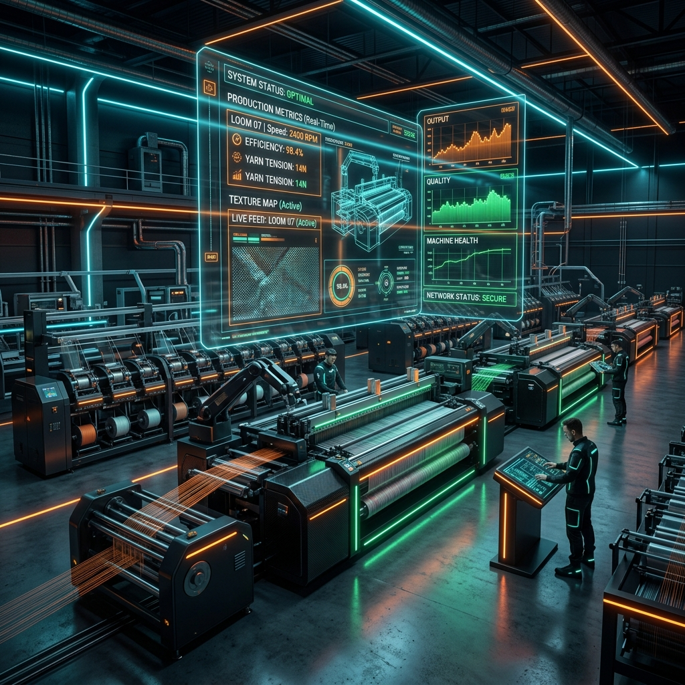

10 specialist AI agents watching every stage of a textile mill — fused into one unified cognitive twin that catches defects, optimizes water & energy, and prevents downtime.
Textile manufacturing suffers from cascading multi-stage failures that isolated software tools cannot solve.
High moisture or weak tensile yarn entering production causing severe downstream loom stoppage.
Manual visual inspection misses ~35% of slubs & holes until hundreds of meters are already woven.
Highest cost rejection category — re-dyeing cycles wasting massive water, dye chemicals & power.
Bearing wear & motor overheating causing sudden loom halts instead of condition-based maintenance.
Exact names and capabilities matching the project's agent specification files:
Decides whether incoming yarn/fiber batches are fit for production before a single machine touches them. Prevents high moisture or low strength material from entering the mill.
Inspects fabric coming off looms in real time via computer vision. Flags holes, weft cracks, and slubs within seconds to prevent meters of wasted fabric.
Recommends exact dye chemical %, temperature-time curves, and liquor ratios to achieve first-time shade matching, eliminating costly re-dyeing cycles.
Continuously monitors Effluent Treatment Plant (ETP) discharge metrics (pH, TDS, turbidity, BOD/COD) to stop environmental and regulatory violations before discharge.
Monitors power consumption across boilers, compressors, and motors, shifting high-load jobs to lower-tariff peak windows to cut kWh/kg fabric cost.
Analyzes vibration and temperature signatures to forecast machine breakdown (bearing wear, misalignment) before forced loom stoppages occur.
Monitors CCTV camera feeds for PPE compliance (helmets, ear protection) and hazard-zone intrusions near moving looms and machinery.
Predicts upcoming order volume and buyer trends so production scheduling, raw intake, and dyeing capacity are planned before orders land.
Tracks batch custody lineage (cotton farm $\rightarrow$ yarn lot $\rightarrow$ fabric roll) and validates organic / GOTS certification integrity.
Fuses all 9 specialist outputs into a single Mill Health Score, resolves operational trade-offs, and generates ESG compliance reporting for export buyers.
How raw sensors flow into autonomous microservices and fuse into a unified plant management brain.
• Moisture / Tension Sensors
• Inspection Cameras (RTSP)
• ETP Discharge Monitors
• Vibration Accelerometers
• ERP Batch Logs
• Independent FastAPI Services
• ML Model & Computer Vision
• Anomaly Detection Engines
• Neo4j Graph Lineage
• Postgres Output Store
• Gemini LLM Orchestrator
• LangGraph State Manager
• Unified Mill Health Score
• Executive Action Advisory
• Auto ESG Report Generation
Projected operational savings across quality, utilities, and downtime reduction.